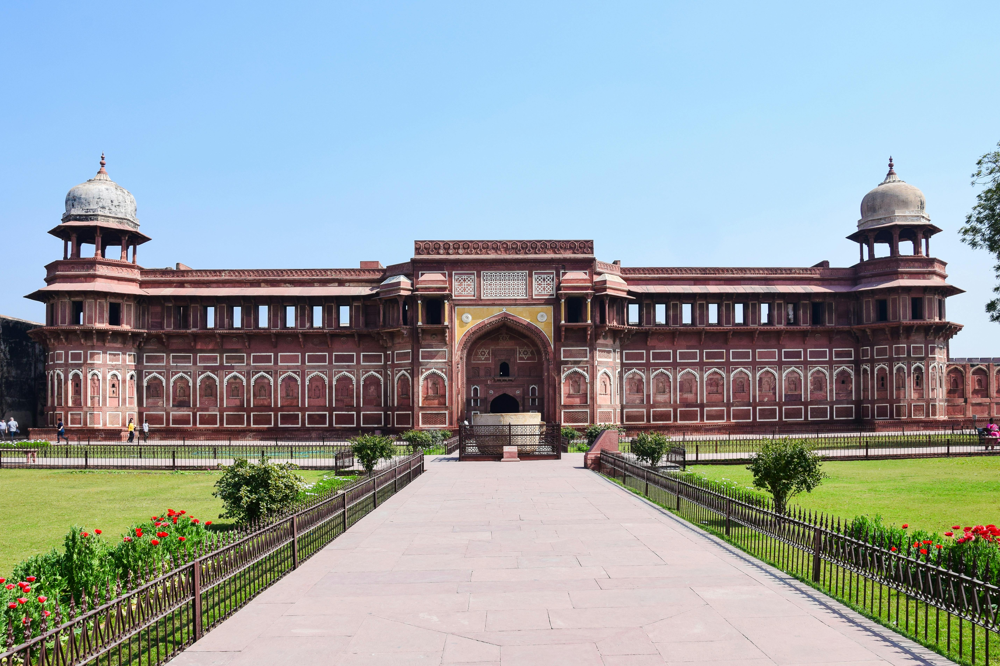
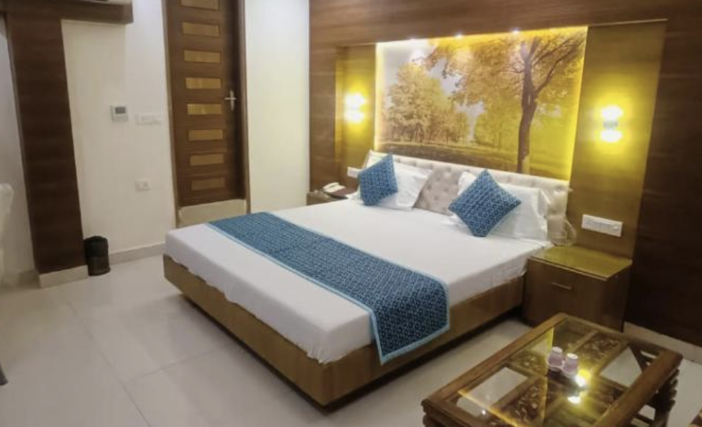

Agra Fort

|  |
Agra Fort |
|
|---|---|---|
|  |
Book your Stay |
Il Forte di Agra, situato ad Agra, è una massiccia fortezza di arenaria rossa che fu la residenza principale degli imperatori Mughal. Costruito dall'imperatore Akbar nel XVI secolo, il forte è un capolavoro di architettura Mughal con palazzi, moschee e sale di udienza. Oltre alla sua importanza storica, il forte offre viste spettacolari sul vicino Taj Mahal. Visitare il Forte di Agra permette di immergersi nella ricca storia e cultura dell'India. |